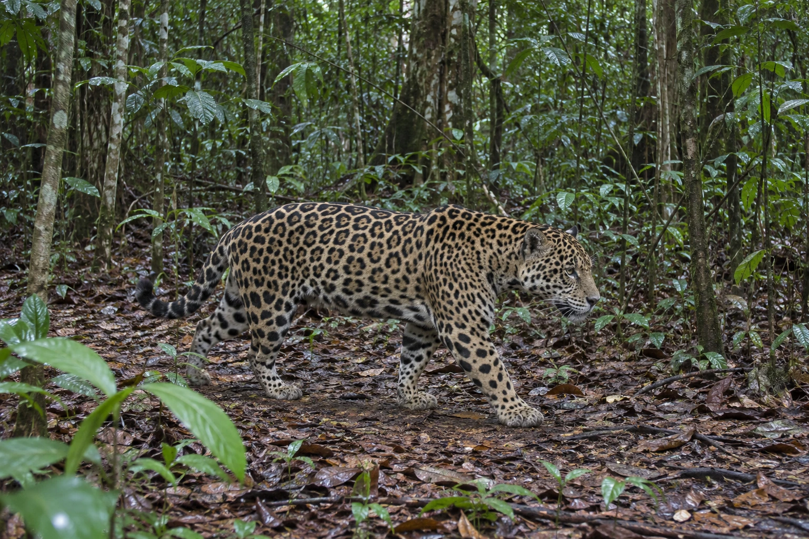
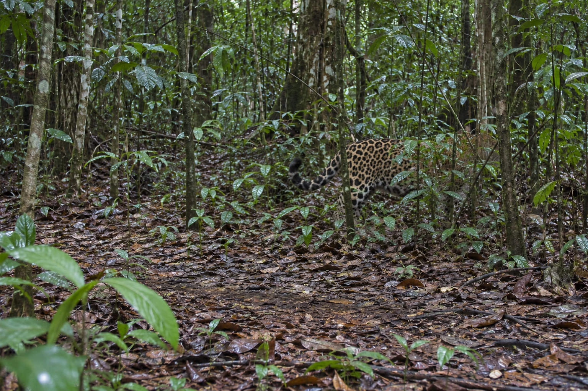
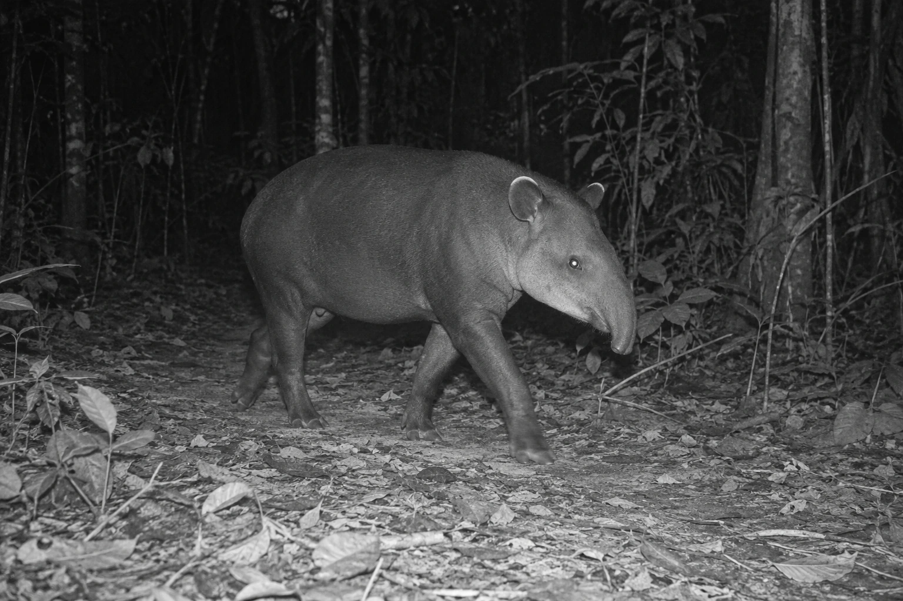
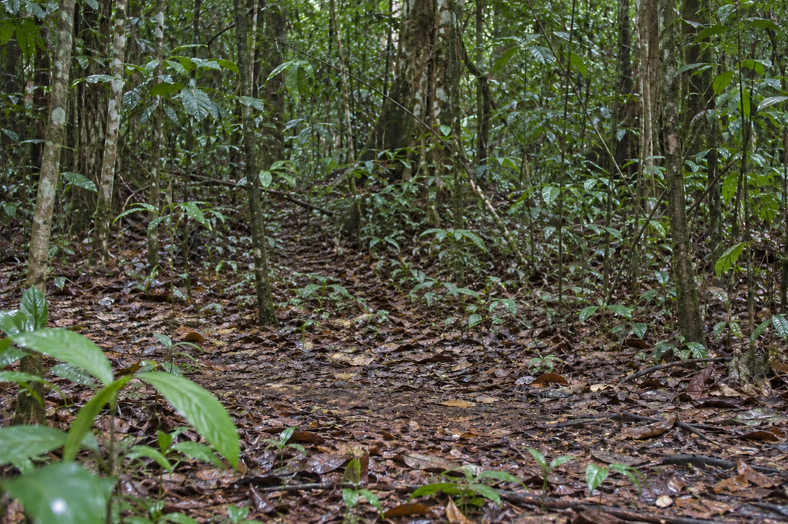

相機拍下照片，
接著怎麼認出動物？
跟著同一張照片，看框選、分類與人工核對各自做什麼。
每張照片，都能回頭查看
點選紀錄，打開同一張原圖。




目前是靜態版本，下方保留完整文字流程。
動畫暫時無法載入。仍可閱讀照片與下方文字流程。
四張照片為 AI 生成情境；框選、分類與人工核對都是方法示意，未執行 SpeciesNet。
完整文字流程
自動相機留下各種照片
照片裡可能有清楚的動物、局部身體、夜間影像，也可能只有森林空景。研究工作從整理這些照片開始。
從一批照片中選一張查看
照片編號與來源一起保留。AI 分析的是已收集到的影像，不是在森林裡操控或追蹤動物。
先找位置，再裁出框內內容
偵測器先找出動物的位置，此時框只表示「動物」，還沒有物種名稱。本動畫選用裁切分類路徑，把同一張原圖的框內內容交給分類器。裁切能放大已有細節，卻不能補出被枝葉遮住的身體。
分類可以停在較粗的範圍
分類器提出可能的名稱，整理規則再決定能保留多細的分類。清楚照片與遮蔽照片分別示範到物種與只到貓科的結果。這不是「只要遮蔽，就一定回傳貓科」的固定規則。SpeciesNet 也有整張影像分類的路徑，並非所有模式都必須先裁切。
由人員接受、修改或保留疑問
人員查看原圖與模型建議，再決定是否確認。示例中的清楚照片獲得確認；遮蔽與夜間照片仍保留較粗分類和待確認狀態。模型建議不會自動變成人工確認。
整理結果連回同一張照片
已確認、待確認與空景照片都留在清單中，可以打開原圖。空景只表示這張照片沒有可見動物，不代表該地永久沒有動物。相機與時段欄位是原先附帶的示意資料，不是模型從影像推算的地點或精確時間。這裡沒有辨識個體、跨照片去重或計算動物總數。
地點、分類層級與版本
地點資訊可以交給整合規則限制分類結果，但不會代替照片判讀，也不是從照片查證動物所在地。原始分類候選與規則整理後的結果應分開保留。
「空景」「只判為動物」與「無法判定」是不同結果。較高分類群與空景等標籤，也不能直接加成物種數。
本示意參考 Google 開源程式 2026-10-16 的固定版本，套件宣告為 5.0.6。該版本可對多個符合條件的偵測區域分類；動畫聚焦一個框，並未聲稱完整重現 Wildlife Insights 當前的後端系統。
回到原始來源
- Google SpeciesNet 固定版本說明
偵測、分類、整合規則及逐偵測輸出的工作方式。
- Wildlife Insights 人員覆核說明
回看原圖，接受、修改或保留未確認結果。
- Gadot 等，2024 方法研究
裁出動物區域再分類的技術動機。
- WWF 的秘魯森林相機案例
相機影像與平台使用情境，不作為本示意分類準確率的證據。
- Google Research 的工作流程回顧
物種初篩與人員核對的分工。